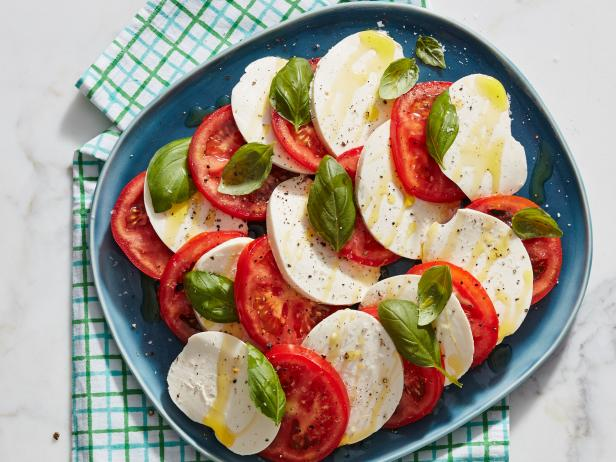

Caprese Recipe

Description
The is Mama Mia's world famous Caprese recipe. This recipe created
the now infamous salad fingers guy.
Mama made this recipe with the specific intention to undermine America's democracy
in order for her to usurp hegemony of the Northern Hemisphere.
Ingredients
- Mama's famous secret special tomatoe slices
- Mozzarella from Mount Olympus
- Basil leaves
- Olive oil
- Salt and pepper
Steps
- Cut up tomatos and mozzarella into slices
- Alternate slices on plate (tomato,mozzarella, etc.)
- Drizzle olive oil over slices
- Sprinkle basil leaves, salt, and pepper over dish